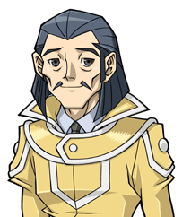
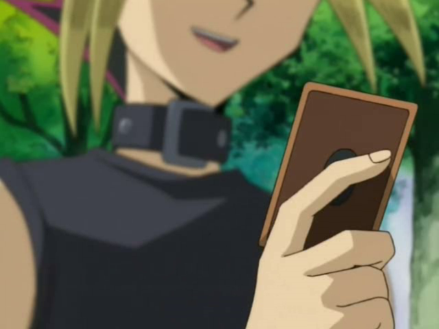

?
?Elle était sur le point de répondre quand...
: Je m'appelle Serena. Judai n'est pas avec nous. Il essaie de retarder les forces d'Academia pour que nous puissions nous échapper.
Le ton de la nouvelle voix s'est adouci un peu.
???: Serena, je suis heureux que Judai ait réussi à te convaincre de la vérité. Mais je dois admettre que je ne m'attendais pas à un sauvetage massif.
: Les choses se sont compliquées.
Serena a simplement dit.
???: Laissez-moi répéter ma question précédente : Où est
Yuki Judai
?
Elle était sur le point de répondre quand...
Alex: Là-bas !
Alex a crié en pointant du doigt derrière le groupe. Serena,
Asuka ,
Yusho
,
Yusho et les autres ont vu Judai sortir en courant du
tunnel. Ils étaient tous heureux de le voir revenir sain et sauf.
et les autres ont vu Judai sortir en courant du
tunnel. Ils étaient tous heureux de le voir revenir sain et sauf.
 : Il vient de revenir ! Il est avec nous maintenant !
: Il vient de revenir ! Il est avec nous maintenant !
Annonça Serena, totalement soulagée. Alors qu'ils se retrouvaient, Judai rendit à Yusho son disque de duel tandis qu'Asuka lui rendait le sien.
 : Merci de l'avoir garder.
: Merci de l'avoir garder.
Disait Judai. Asuka a hoché la tête avec un sourire.
???: Judai, tu vas bien ?
: Maintenant, je vais bien
Astral . Allez, partons d'ici !
. Allez, partons d'ici !
 : D'accord. En attente de vous faire entrer dans le vaisseau.
: D'accord. En attente de vous faire entrer dans le vaisseau.
Astral a répondu alors que la lumière est devenue rouge. Alors qu'ils attendaient, Judai se tourna vers Serena, qui était contente qu'il soit revenu sain et sauf jusqu'à eux.
: Heureusement que tu vas bien Judai, sinon, je serais revenue te chercher moi-même.
Disait Serena d'un ton têtu, mais amical. Judai lui souria.
: Pareil pour moi.
Quelques secondes plus tard, tout le monde fut transféré à bord de l'énorme vaisseau, qui s'envola et disparut dans un grand flash de lumière. Une fois à l'intérieur, ils ont tous été émerveillés par leur nouvel environnement.
Alex: Wow ! C'est vraiment un vaisseau spatial !
Alex le disait tout excité.
 : Je ne dirais pas exactement ça, mais c'est assez proche.
: Je ne dirais pas exactement ça, mais c'est assez proche.
Tout le groupe s'est retourné et a sursauté en regardant Astral.
Etuidant: Qu'est-ce que c'est !?
Demanda l'un des plus jeunes élèves, l'air effrayé. Judai a décidé de prendre la défense d'Astral.
 : Woah, tout le monde se calme ! Tout va bien ! Astral est un de mes amis. Il ne va faire de mal à personne.
: Woah, tout le monde se calme ! Tout va bien ! Astral est un de mes amis. Il ne va faire de mal à personne.
Judai rassura les étudiants effrayés.
: Il dit la vérité. Je ne représente aucun danger pour aucun d'entre vous. Après tout, je viens de vous aider à vous échapper d'Academia.
Répondit ce dernier. Petit à petit, tout le monde s'est calmé.
: Alors tu es la personne à qui j'ai parlé sur le disque de duel de Judai ?
Demanda Serena en s'approchant de l'être lumineux.
: C'est exact. C'est un plaisir de te rencontrer enfin en personne, Serena.
Astral le disait avec un sourire amical.
: Je suppose que je dois te remercier de nous avoir sauvés. Donc... merci.
Serena le remercia sincèrement. Astral a hoché la tête en signe d'appréciation.
: Je t'en prie.
Astral lui répondit.
 : Je te dois également ma gratitude.
: Je te dois également ma gratitude.
Yusho disait également.
/Asuka1.png) : La mienne aussi.
: La mienne aussi.
Asuka ajouta également.
: Bien sûr. Maintenant, si vous voulez bien trouver un endroit où vous asseoir, nous allons partir.
Disait Astral en indiquant les différents sièges du vaisseau.
Dès que tout le monde furent installés, Astral a déplacé le dirigeable dans le ciel et un flash lumineux s'est allumé sur le grand écran à l'avant. Lorsque le flash s'est estompé, le groupe a vu des étoiles tourbillonnantes dans un vaste noir au passage.
 : Où sommes-nous maintenant ?
: Où sommes-nous maintenant ?
: Nous avons quitté la Dimension de Fusion et le monde auquel elle est connectée. Dans peu de temps, nous arriverons à votre nouveau refuge.
: Où nous emmenes-tu exactement ?
Demanda Yusho avec curiosité. Judai répondit à la place de Astral.
: Croyez-le ou non, nous nous dirigeons vers le monde d'où je viens. De plus, vous n'aurez pas à vous inquiéter que
Akaba Leo et Academia vous trouvent. Personne là-bas ne peut nous atteindre au-delà d'une certaine barrière séparant nos mondes. De plus, je pense que vous allez vraiment aimer l'endroit où vous allez séjouner !
et Academia vous trouvent. Personne là-bas ne peut nous atteindre au-delà d'une certaine barrière séparant nos mondes. De plus, je pense que vous allez vraiment aimer l'endroit où vous allez séjouner !
Il le disait avec enthousiasme.
/Asuka6.png) : Quel est le nom de cette endroit Judai ?
: Quel est le nom de cette endroit Judai ?
Demanda Asuka. Judai a fait un sourire carnassier.
: C'est une surprise.
Il dit mystérieusement en se grattant le nez.
Alors que les étudiants discutaient entre eux de l'endroit où Judai et Astral les emmenaient, Serena a silencieusement attiré Judai dans une section privée afin qu'ils ne puissent pas être entendus.
 : Judai, merci de nous avoir aider à nous sortir de là. Je... le pense sincèrement.
: Judai, merci de nous avoir aider à nous sortir de là. Je... le pense sincèrement.
Elle le dit doucement.
: Aucun problème, Serena.
Judai lui répondit avec un hochement de tête. Il a ensuite vu qu'elle semblait encore incertaine de quelque chose.
: Qu'est-ce qu'il y a ? Qu'est-ce qui te tracasse ?
Serena a regardé droit dans les yeux de Judai.
 : Il y a deux choses que je veux clarifier avant de pouvoir commencer à me sentir en sécurité.
: Il y a deux choses que je veux clarifier avant de pouvoir commencer à me sentir en sécurité.
Elle a dit sérieusement.
: D'accord. Comme quoi ?
Judai a demandé.

Quand on était à la "You Show Duel School", tu m'as dit que Akaba Leo avait besoin de moi et de 3 autres filles pour une sorte de plan qui nous tuerait tous. Tu as dit que je devais attendre d'entendre toute l'histoire, mais je dois savoir une chose.
: S'il te plaît, dis-moi... pourquoi exactement a-t-il besoin de nous ? Je
devrais au moins savoir ça.
Demanda Serena. Judai soupira en se grattant la tête.
: Ok, si tu insistes. Avant que tout cela ne commence, Leo a perdu la vie de sa seule et unique fille qu'il chérissait plus que tout au monde. Sa perte l'a poussé à bout. Il a construit une machine qui pourrait la faire revivre, mais pour qu'elle fonctionne... il a besoin de votre force vitale et de celle des autres filles qu'il recherche. Le processus pour ramener sa fille finirait par vous tuer toutes les 4.
Serena est restée là, totalement choquée. Elle n'avait jamais imaginé que ce serait quelque chose d'aussi tragique que cela.
: Il n'a jamais dit une seule fois... qu'il avait une fille. Mais encore une fois...
Serena disait, alors que sa voix se durcissait.
: Il ne s'est pas senti obligé de mentionner son fils non plus. Il semble ne se soucier que de lui-même.
Elle se sentait toujours en colère et trahie que l'homme ne l'ait jamais considérée comme un soldat loyal, et ces sentiments augmentaient en intensité en sachant qu'elle n'était qu'un moyen d'arriver à ses fins... ce qui signifiait sa propre vie.
: Ouais, cet abruti veut seulement ce qu'il a perdu et ferait n'importe quoi pour le récupérer. Il n'a ni l'esprit ni le coeur pour autre chose...
: Alors, quelle était l'autre chose à laquelle tu pensais ?
Serena est sortie de ses pensées haineuses pour répondre.
: Akaba Leo m'a dit qu'il me retrouverait où que je m'enfuie. Maintenant tu dis que nous allons vers un monde où il ne pourra pas nous atteindre. Es-tu sûr qu'il ne peut pas... ?
Demanda Serena, toujours un peu effrayée. Judai lui a tapoté l'épaule d'un air très rassurant.
: Fais-moi confiance. Le vieux chauve n'a pas connaissances d'autres mondes en dehors de son propre territoire, et même s'il savait, sa technologie n'a rien à voir avec la nôtre. Toi et les autres ne pourriez pas être plus en sécurité.
Serena a souri et hoché la tête. C'est alors que tout le monde à bord a entendu un fort signal sonore.
: Qu'est-ce que c'est ? Sommes-nous attaqués !?
Demande Serena avec crainte. Judai a juste gloussé.
: Non. Cela signifie que nous venons d'atteindre votre nouvelle maison loin de chez vous.
Il a conduit Serena, Yusho, Asuka et les étudiants vers l'écran de visualisation avant pour voir un endroit très familier à Judai.
 : Les amis ! Bienvenue... à la
Duel Academia
: Les amis ! Bienvenue... à la
Duel Academia !
!
Judai et tous les autres se sont téléportés vers leur destination. Ils se trouvaient sur une île immense, où ils ont vu de grandes forêts en couvrir la moitié, tandis qu'un volcan et une vallée rocheuse occupaient l'autre côté. Il y avait également un lac avec des ruisseaux qui se jettaient dans l'océan ouvert. Près du centre de l'île se trouvait un grand bâtiment. Il se composait d'un grand dôme argenté entouré de piliers jaune foncé avec des dômes plus petits de couleur bleue, jaune et rouge.
: Judai, cet endroit est magnifique.
Serena a dit avec admiration.
: Je suis d'accord. Cela ne ressemble en rien à l'île sur laquelle
Academia a été construite.
a été construite.
Ajouta Asuka, également impressionnée par le nouveau paysage qui s'offrit à elle.
: Ce n'était qu'un gros rocher avec une forteresse high-tech sous surveillance constante. Comparé à ça, cet endroit semble... beaucoup plus vivant.
: On est trois à être d'accord.
: Content que vous approuviez.
Judai a dit, heureux d'entendre leur approbation.
: Eh bien, je crois que mon travail ici est terminé. Si tu peux gérer les choses à partir de maintenant, Judai, je vais prendre congé. Au fait, je devrais t'informer
que nous avons réussi à sauver
Ruri et
Yuto
et
Yuto et qu'ils sont en sécurité avec
Yuma
et qu'ils sont en sécurité avec
Yuma .
.
: Génial ! Merci de me le dire Astral ! Bon retour chez toi !
Judai a dit joyeusement, en lui faisant signe d'au revoir.
: Je le ferai. Nous nous reparlerons lorsque notre réunion commencera.
Sur ce, Astral retourna à bord de son vaisseau et disparut une fois de plus, retournant dans son propre monde.
: Tu es vraiment allé dans cet école, Judai ?
Demanda Serena avec étonnement. Judai hocha la tête, heureux d'être de retour dans son endroit préféré.
: Bien sûr... et maintenant, ca sera ton cas aussi.
Judai lui répondit, à sa surprise, en prenant la tête du groupe.
: Très bien les amis, suivez-moi ! Je vais vous présenter à l'homme qui dirige cette école et j'espère qu'il pourra vous aider à vous installer!
Sur ce, le groupe de Serena et Yusho marcha avec Judai dans le bâtiment principal juste devant.

Assis dans son bureau, un homme chauve d'âge moyen avec une sorte de barbe grise était occupé à remplir des papiers. Il soupira, souhaitant que les choses soient un peu plus intéressantes cette année. Depuis que Yuki Judai et la plupart de ses amis ont obtenu leur diplôme, la Duel Academia est devenue un peu terne. Ce garçon lui manquait et il espérait qu'il allait bien.
Pour l'instant, il attendait qu'une certaine ancienne élève se présente pour un poste d'assistant d'enseignement. Elle était encore trop jeune pour être un professeur à part entière, mais cela lui permettrait de se mouiller les pieds, comme on dit.
???: Peut-être que cette année, nous aurons un ou deux élèves qui nous surprendront et dépasseront nos attentes. Qui sait ?
Il soupira à nouveau, se parlant à lui-même.
???: Ça ne me dérangerait pas d'avoir un peu d'excitation par ici. Mais, hélas, il n'y en aura pas d'autre comme...
: Hey !
Samejima -
Kosho
! (trad: Samejima-Kôshô = Directeur Samejima en VF) Ça fait longtemps qu'on ne s'est pas vu ! Comment ça va ?
-
Kosho
! (trad: Samejima-Kôshô = Directeur Samejima en VF) Ça fait longtemps qu'on ne s'est pas vu ! Comment ça va ?
L'homme, Samejima, leva les yeux avec surprise pour voir la personne qu'il était sur le point de nommer.
 : J-Judai-kun !?
: J-Judai-kun !?
Il a failli crier en se redressant. Il n'en croyait pas ses yeux. C'était vraiment l'ancien élève du dortoir Osiris Red qu'il admirait tant. Il se tenait juste devant la porte de son bureau.
: C'est... vraiment toi ?
Demanda-t-il, n'en croyant toujours pas ses yeux. Judai gloussa face à sa réaction.
: Bien sûr que oui ! J'espère que je n'arrive pas à un mauvais moment, n'est-ce pas ?
Samejima secoua la tête en faisant signe au jeune homme d'entrer.
: Bien sûr que non ! Entre, mon cher garçon ! Bon retour à l'Académie !
Il salua en serrant la main de Judai.
: Les choses ne sont plus les mêmes ici depuis ton départ. Plutôt calme, en fait. Je suppose que tu as été occupé après ton diplôme?
Il a demandé, semblant heureux de voir son ancien élève.
: Oh, vous n'avez pas idée.
Judai dit vaguement en riant. Samejima l'accompagna dans son humeur.
: Je ne peux qu'imaginer, avec la façon dont les choses intéressantes semblent se produire quand tu te trouves dans les parages. Alors...,
L'homme plus âgé s'adressa à lui, plus professionnel.
: Qu'est-ce qui t'amène à revenir dans ton ancienne école, Judai-kun ?
Judai gloussa un peu.
: Et bien... C'est une sacrée histoire.
Il entreprit ensuite de raconter à Samejima ses récentes aventures dans la Dimension Fusion et les personnes qu'il avait emmenées avec lui, dont Serena. Samejima était intrigué par chaque détail, notamment en entendant que l'un des évadés était une version alternative d'Asuka Tenjoin. Cela l'a vraiment surpris. Cependant, il a détesté entendre les parties où les étudiants étaient traités dans cette autre école. Il ressentait un dégoût total envers Akaba Leo et méprisait la façon dont les autres personnes avaient souffert à cause de lui.
: Ce "Professeur" a l'air d'être un vrai tyran d'après ce que j'entends. Franchement Judai-kun, c'est un miracle que toi et les autres élèves ayez réussi à vous échapper de ce cauchemar qu'ils appellent une école !
: Tu ne cesseras jamais de m'étonner.
Samejima a dit avec tendresse.
: Merci, Kosho.
Répondit Judai.
: Voulez-vous les rencontrer ? Ils attendent dehors.
Samejima a immédiatement accepté.
: Bien sûr que je veux ! Fais-les entrer s'il te-plaît.
A l'appel de Judai, Yusho et Asuka ont conduit leurs élèves à l'intérieur. Samejima a serré la main de Yusho.
: Vous devez être Sakaki Yusho. Bienvenue à la Duel Academia. Judai m'a parlé de vous et de la façon dont vous vous occupez de tous ces élèves. Je suis très heureux de vous rencontrer.

: Merci, Samejima-Kosho. Mais je ne peux pas m'attribuer tout le mérite. J'ai eu beaucoup d'aide de la part d'Asuka ici.
Yusho répondit, en tapant Asuka sur l'épaule.
: C'est vrai. Sensei et moi avons fait de notre mieux pour aider tous ces enfants après les avoir éloignés d'Academia.
Samejima fut choquée de voir à quel point cette Asuka ressemblait à celle qui avait fait ses études ici. Même sa voix était identique. Si Judai ne l'avait pas prévenu à l'avance, il aurait pensé que c'était l'Asuka qu'il attendait aujourd'hui. Il a fait de son mieux pour ne pas montrer sa surprise.
: Je suis... très heureux d'entendre ça, Asuka. Tu as bien fait.
La jeune femme souria de façon appréciative face au compliment du directeur. L'homme plus âgé tourna maintenant son attention vers l'invitée le plus important de la pièce.
: Laisse-moi deviner... tu est Serena, n'est-ce pas ?
Le directeur lui demanda.
: En effet, je m'appelle Serena.
La jeune fille confirme en serrant elle aussi la main de Samejima.
: Bienvenue, jeune fille. Judai m'a dit que tu es une excellente duelliste.
Il a dit gentiment. Serena acquiesca.
: Je le suis. Je me suis entraînée dur pour devenir aussi forte que je le suis.
: Bien que ce soit pour... d'autres raisons.
Elle expliqua en baissant les yeux. À sa grande surprise, Samejima a posé une main sur sa tête et lui a souri chaleureusement. Il lui a ensuite parlé d'un ton plus doux.
: J'ai entendu. Çela n'a pas dû être facile d'être élevée comme tu l'as été. Mais c'est du passé maintenant. Et cette institution, cette Académie de Duel... Je pense que ça sera pour toi une grande amélioration par rapport à l'endroit d'où tu viens. Moi et mon équipe enseignons à nos élèves non pas à se battre dans des guerres et à conquérir d'autres dimensions, mais à devenir des Duellistes de Ligue Professionnelle... à devenir des champions afin d'inspirer les autres. Aimerais-tu que cela soit ton avenir ?
Serena a réfléchi à cela dans son esprit. Tout ce qu'elle a toujours appris, c'est qu'elle devait être un soldat pour faire des duels pour le projet "Arc Area". C'était quelque chose qu'elle était à l'origine fière de faire. Depuis qu'elle a appris les vrais plans de Akaba Leo pour elle et qu'elle s'est éloignée de lui, Serena est devenue incertaine de ce qu'elle allait faire. Maintenant, cet homme, Samejima, qui semblait être l'exact opposé de Leo, lui offrait une nouvelle voie. Toute sa vie, elle a voulu prouver sa valeur en tant que duelliste, ce qui, elle le savait maintenant, ne signifiait rien pour son ancien professeur. Samejima se souciait réellement d'elle et voulait la guider vers sa nouvelle destinée. Serena le regarde et souria.
: Monsieur, Samejima-Kosho... cela... semble être parfait pour moi.
Samejima semblait vraiment satisfait.
: Je suis heureux de t'entendre dire ça.
Il a ensuite regardé tous les élèves présents.
: Bien, est-ce que les autres veulent aussi rester dans cette école ?
Alex et tous les autres élèves ont répondu à l'unanimité.
Etudiants(tes): Oui !
Il s'est ensuite tourné vers Yusho et Asuka.
: Est-ce que çela vous convient à tous les deux ?
Les deux se sont regardés et ont hoché la tête en signe d'accord.
: Absolument. Je crois fermement que ces enfants seront beaucoup plus heureux ici qu'à Academia. D'autant plus qu'ils n'auront pas à s'inquiéter d'être retrouvés et renvoyés là-bas.
Disait Yusho. Samejima acquiesça.
: Excellent. Il ne reste plus qu'à les faire qualifier et les faire accepter dans les dortoirs appropriés.
Cela a déconcerté Serena et le reste des étudiants.
Alex: Attendez, on ne reste pas tous au même endroit ?
Alex demanda.
: Cela dépend du déroulement de vos examens de qualification. Vos résultats détermineront le dortoir que vous occuperez pendant les 3 années passées à la
Duel Academia. Bien qu'il soit possible de changer de dortoir si vous montrez des améliorations après un certain temps.
Expliqua Samejima.
: Qu'est-ce que vous voulez dire ?
Demanda Asuka. Samejima se racla la gorge et commença à expliquer.
: Les élèves résidants à la Duel Academia sont répartis dans 3 dortoirs distincts, chacun situé à un endroit différent de l'île. Ils sont connus sous le nom de Osiris Red, Râ Yellow et Obelisk Blue.
: Vous avez dis Obelisk Blue ?
Serena a demandé alors qu'elle et les autres élèves ont tressailli de peur en entendant cette dernière. Samejima a vu leurs réactions et a rapidement expliqué.
: Calmez-vous ! Il n'y a rien de mauvais dans ce dortoir. C'est simplement celui où vivent les étudiants les plus qualifiés. Je vous assure qu'il n'y a
rien à voir avec cette
Obelisk Force .
.
Après une minute ou deux, les élèves se sont tous calmés. Soulagé, Samejima a continué.
: Comme je le disais, ces dortoirs deviendront vos nouvelles maisons pendant votre scolarité ici. Obelisk Blue, comme je viens de le mentionner, est destiné
à ceux qui ont obtenu les meilleures notes, entre autres. Râ Yellow est pour ceux qui ont des résultats moyens ou supérieurs. Osiris Red est pour les étudiants
qui... ont réussi à passer les examens de justesse.
Il a dit délicatement.
: En d'autres termes... ce dortoir est pour les Duellistes les plus faibles.
Serena le disait sans ambages. Samejima eu des sueurs froides à cause de ce commentaire.
: C'est... une autre façon de le dire.
Il s'est à nouveau raclé la gorge.
: Cependant, je dois préciser que ce n'est pas parce que Osiris Red est le plus bas du classement des dortoirs que tous ses occupants sont faibles. Notre
meilleur exemple est Judai-kun ici même.
Samejima nota en regardant Judai. Tous les étudiants l'ont regardé, stupéfaits.
Alex: Judai ! Tu es resté un Osiris Red !?
Demanda Alex. Judai sourit et acquiesca.
: C'est vrai, Alex. Ma veste en est la preuve. Osiris Red est peut-être très mal vu, mais ce n'est pas si mal.
: N'as-tu jamais déménagé dans l'un des autres dortoirs ?
Demanda Serena.
: Eh bien, je me suis qualifiée pour passer dans les Râ Yellow au cours de ma première année, mais j'ai refusé. Je suis restée dans les Red simplement parce que je m'y plaisais. Bien sûr, c'était juste ma préférence. Si vous ne voulez pas être en Osiris Red, c'est cool. Il suffit d'avoir un score assez élevé et vous pourrez entrer dans l'un des autres dortoirs.
: En fait, entrer dans le dortoir Obelisk Blue n'est pas si simple. Non seulement vous devez avoir les meilleures notes aux examens lors de l'inscription,
mais vous devez également avoir un diplôme recommandé de vos anciennes écoles préparatoire de duel. Comme aucun d'entre vous n'a de tels diplômes, la seule façon
d'entrer à Obelisk Blue est d'y accéder depuis Ra Yellow. Du moins, pour les garçons.
Corrigea Samejima.
Etudiante: Cela veut dire quoi ?
Une élève a demandé en entendant ce commentaire. Serena et les autres filles s'interrogeaient aussi à ce sujet.
: Obelisk Blue, contrairement aux autres dortoirs, est le seul conçu pour accueillir les garçons et les filles. Dans des bâtiments séparés, bien sûr. La raison étant que les autres dortoirs n'ont pas été conçus pour les filles. En d'autres termes, toutes les filles admises à la Duel Academia sont automatiquement placées chez les Obelisk Blue, même si elles remplissaient les conditions d'entrée dans d'autres dortoirs.
Cela a rendu toutes les filles appréhensibles. Serena, cependant, n'était pas du tout satisfaite de cela.
: C'est stupide. Pourquoi devrions-nous avoir une attention particulière juste parce que nous sommes des filles ? Pour ma part, je ne resterai pas dans un
endroit où il y a le nom "Obelisk". Aucune chance.
Disait Serena avec dégoût. Les autres filles étaient d'accord avec elle, ainsi que les garçons. Samejima hocha la tête en signe de compréhension.
: Je ne t'en veux pas. Ce nom a une très mauvaise réputation là d'où tu viens, après tout. Dans ce cas, je veillerai personnellement à ce que toutes les
filles ici aient la possibilité de rester soit en Osiris Red, soit en Râ Yellow... en fonction des résultats de vos tests bien sûr.
Tout le monde semblait beaucoup plus heureux après cette déclaration.
Etudiant: Alors comment allons-nous passer ces examens de qualification ?
Demanda finalement l'un des autres élèves.
: Vous passerez tous d'abord un test écrit pour déterminer vos connaissances en duel. Ensuite, il y aura un test pratique, qui implique un duel avec un
examinateur désigné. Vos résultats aux deux tests seront utilisés pour affecter chacun de vous aux dortoirs appropriés.
Samejima a répondu.
: Ça n'a pas l'air si difficile. Quand pouvons-nous commencer ?
Demanda Serena, impatiente de commencer.
: Eh bien, tout d'abord, j'attends quelqu'un qui va bientôt passer pour aider l'un de nos professeurs. Une fois que j'aurai finalisé sa position, je
commencerai immédiatement à préparer vos tests individuels. Pendant ce temps, Judai...
Samejima s'adressa à l'ancien élève Osiris.
: Voudrais-tu faire visiter les dortoirs à tout le monde et leur montrer à quoi ils ressemblent ?
Judai semblait excité par cette idée.
: Et comment ! Allez les amis, on y va ! Tout d'abord, mon ancienne maison, le dortoir d'Osiris Red !
Judai dit joyeusement en conduisant le groupe vers la sortie. Samejima soupira une fois de plus et secoua la tête.
: On dirait que ce ne sera plus aussi ennuyeux par ici...
: Donc c'est le dortoir d'Osiris Red ?
Demanda Serena.
Le bâtiment devant le groupe était un bâtiment en bois à deux étages avec un escalier sur la gauche. Il semble y avoir 8 chambres, 4 sur chaque étage. Il semblait également y avoir une autre section sur la gauche qui semblait avoir été construite récemment. Le toit était de couleur rouge brun.
: Bien sûr. Revoir cet endroit me rappelle des souvenirs. Jetons un rapide coup d'oeil à l'intérieur.
Disait Judai en conduisant tout le monde à l'une des chambres du dortoir. Elle semblait assez simple.

: On peut dire que rester ici, c'est comme vivre dans une cabane dans un camping. La nourriture et les services publics ne sont pas les meilleurs, mais c'est mieux que rien.
Serena et les autres pouvaient comprendre pourquoi cet endroit était considéré comme le plus bas des dortoirs. C'était certainement loin des quartiers qu'elle avait à Academia. Cependant, au moins, elle ne serait pas prisonnière ici et constamment surveillée. De plus, Judai a dit qu'il se plaisait ici. Peut-être qu'elle aussi pourrait s'adapter...
: Ça n'a pas l'air si mal.
Commenta Yusho.
: Pas si mal du tout.
Se disait Serena à elle même.
Alex: Où mène cette porte ?
Alex a demandé, en désignant une porte sur le mur du fond.
: Oh, elle mène en fait à la meilleure chambre du dortoir. Elle a été ajoutée par un de mes anciens camarades de classe. Vous allez tous l'adorer.
Judai a dit avec enthousiasme en conduisant le groupe à travers la porte.
Tout le monde était stupéfait. Ils avaient l'impression d'être dans une suite d'hôtel de luxe. Il y avait même une salle de bain luxueuse.
Etudiante: Celui qui a fait ça devait avoir de l'argent à dépenser.
La fille aux cheveux rouges a dit avec étonnement. Judai hocha la tête, lui disant que c'était le cas.
: Qui est en charge des dortoirs ?
Demanda Asuka. Judai pris alors un air un peu triste, à sa grande surprise.
: Chaque dortoir a quelqu'un qui supervise tous ses étudiants.
: L'homme qui surveillait Osiris Red quand je suis arrivé ici... est parti maintenant.
 : Il est maintenant surveillé par la même personne qui surveille le dortoire des Obelisk Blue. Il n'est pas le même, mais c'est cool.
: Il est maintenant surveillé par la même personne qui surveille le dortoire des Obelisk Blue. Il n'est pas le même, mais c'est cool.
Se lamenta Judai.
Je me demande ce qu'il voulait dire par là.
Serena pensa. Yusho s'est aussi demandé.
Après quelques minutes d'exploration, Judai les a conduits à leur prochain arrêt.

: Voici le dortoir des Râ Yellow. Le professeur Kabayama est le professeur principal ici, et il se trouve que c'est un sacré chef. Plutôt chouette comme installation, vous ne trouvez pas ?
Le bâtiment de couleur jaune était non seulement beaucoup plus grand que le dortoir précédent, mais il était aussi beaucoup plus accueillant. Comparé à Osiris Red, cet endroit ressemblait à un mini manoir.
: On y va ?
Disait Judai en leur faisant signe d'entrer.
La nourriture était excellente, les salles de bain étaient agréables, et les chambres semblaient beaucoup plus confortables. La plupart des étudiants étaient définitivement bien plus impressionnés par ce dortoir que le précédent. En fait, Ra Yellow semblait très accueillant. Serena elle-même pensait que cet endroit était très bien pour elle. Elle se demandait pourquoi Judai avait refusé une chance de rester ici.
Etudiante(2): J'espère avoir un score assez élevé pour entrer dans cet endroit.
Une des étudiantes s'exprima avec enthousiasme.
: Peut-être que tu le feras.
Disait Asuka.
Après avoir exploré le dortoir, les étudiants étaient réticents à partir, surtout en sachant où ils allaient aller ensuite. Après avoir été contraint par Yusho, le groupe est finalement parti et s'est dirigé vers le dernier dortoir.


En arrivant quelques minutes plus tard, leurs yeux se sont posés sur non pas un, mais deux châteaux blancs avec des toits bleus. Celui qui était le plus éloigné, juste au-dessus du lac, avait une nuance de bleu plus claire et un attrait plus féminin.
: Et voici le dortoir Obelisk Blue ! Comme l'a dit Samejima-kosho, les élèves d'ici vivent comme s'ils étaient assez riches et sont considérés comme les meilleurs de l'école. Certains d'entre eux sont un peu snobs, mais ce n'est pas toujours le cas. La grande maison devant est celle des garçons, tandis que l'autre est celle des filles.
Judai leur expliquait, se rappelant avoir rencontré et affronté en duel l'Asuka Tenjoin qu'il connaissait. Elle lui manquait comme ses autres amis d'école, y compris son meilleur ami, Sho Marufuji. Il se demandait où elle et les autres étaient maintenant, et ce qu'ils faisaient.
: Qui est en charge des deux dortoirs ?
Yusho a demandé.
: Le dortoir des filles est supervisé par
Emi Ayukawa - sensei
, qui est aussi le professeur en sports et l'infirmière de l'école. Elle est très gentille et je suis sûr qu'elle vous fera sentir les bienvenues ici.
- sensei
, qui est aussi le professeur en sports et l'infirmière de l'école. Elle est très gentille et je suis sûr qu'elle vous fera sentir les bienvenues ici.
Judai a dit aux filles, qui avaient encore des doutes sur le dortoir.
: Le professeur principal du dortoir des garçons se nomme
Cronos de Medici . C'est un type bizarre qui ne m'appréciais pas vraiment au début... surtout parce que je lui ai botté les fesses lors de mon propre examen d'entrée. Mais nous
sommes en bons termes maintenant.
. C'est un type bizarre qui ne m'appréciais pas vraiment au début... surtout parce que je lui ai botté les fesses lors de mon propre examen d'entrée. Mais nous
sommes en bons termes maintenant.
Judai explique, se souvenant du jour où il a été admis à la Duel Academy. C'était aussi le jour où il avait rencontré Yugi Muto pour la première fois et où il avait reçu sa carte “Hane Kuriboh ”.
: Mec, c'était le bon temps...
Etudiant: Devons-nous vraiment regarder à l'intérieur ?
Demanda l'étudiant aux cheveux verts.
Malgré les assurances de Samejima et de Judai, aucun des élèves ne veut s'aventurer dans les dortoirs les mieux classés. Judai, Yusho et Asuka peuvent dire qu'ils ne veulent vraiment rien avoir à faire avec tout ce qui leur rappelle de près ou de loin les soldats d'élite personnels de Akaba Leo, qui étaient sadiques et cruels. Ils ont commencé à s'inquiéter de savoir s'ils allaient même craindre les étudiants qui vivaient là. Si seulement quelqu'un pouvait vraiment les convaincre que l'Obelisk Bleu et ses occupants ne sont pas maléfiques...
???: Judai-sama ! Tu es revenu !
Sans prévenir, Judai s'est fait plaquer au sol par une jeune fille portant une veste rouge sans manches et ayant de longs cheveux noirs. Tout le groupe a été surpris par la fille, mais pas autant que Judai lui-même qui s'est relevé.
: Bon sang,
Rei , tu pourrais essayer de montrer un peu de retenue quand tu salues quelqu'un.
, tu pourrais essayer de montrer un peu de retenue quand tu salues quelqu'un.
Judai se plaignit. Rei gloussa légèrement.
: Désolé. Je suis juste si heurese de te revoir !
Alex: Qui c'est ? Ta petite amie ?
Demanda Alex d'un ton taquin. Judai paniqué presque, tandis que Rei elle-même a légèrement rougi.
: Quoi, non ! C'est juste une amie !
Ce dernier clarifia.
Rei s'approcha alors de tout le monde et se présenta.
: Salut tout le monde ! Je m'appelle Rei Saotome, je suis une étudiante de deuxième année à la Duel Academia ! Vous êtes tous nouveaux ici ?
Elle a demandé à tous les autres élèves.
: On peut dire ça.
Répondit Serena.
: Je suppose que tu es une Osiris Red, à en juger par ta veste.
Elle fut de nouveau surprise lorsque Rei secoua la tête.

: Plus maintenant. J'étais chez les Osiris Red au début quand je me suis inscrite l'année dernière, mais à mi-chemin, j'ai avancé jusqu'a Obelisk Blue.
Cela rendit les étudiants de nouveau craintifs, ce que Rei remarqua définitivement.
: Euh, ai-je dit quelque chose de mal ?
Elle a demandé, semblant confuse par leurs réactions.
: Si tu es chez les Obelisk Blue, alors pourquoi portes-tu la veste des Osiris Red ?
Demande Asuka. Rei a alors sursauté en la remarquant pour la première fois.
: Asuka-san ! Tu es aussi revenue ! Tu m'as aussi manqué !
: Mais... pourquoi tu me demandes ça ? Tu étais ici quand j'ai avancé dans les dortoirs supérieurs.
Asuka a incliné la tête et a levé un sourcil en entendant ça.
: Euh... Je ne sais pas de quoi tu parles. Je n'ai jamais été ici jusqu'à maintenant. Aussi, je suis presque sûr que nous ne nous sommes jamais rencontrés. Comment connais-tu mon nom ?
Judai a eu des sueurs froides et s'est mentalement giflé. Il avait complètement oublié de mentionner aux autres qu'il y avait une autre Asuka dans son monde.
: Euh, je peux vous parler en privé juste une seconde ?
Judai a dit rapidement à Yusho, Serena, Asuka et Rei.
: Je reviens tout de suite ! Restez juste là !
Il a dit aux étudiants, qui étaient tous confus. Une fois hors de portée de voix, Judai a commencé à remettre les pendules à l'heure.
: Ok, tout d'abord Rei, ce n'est pas l'Asuka que nous connaissons. Elle vient en fait d'un endroit lointain où elle n'a jamais rencontré ni toi, ni moi, ni personne ici. Elle est juste en visite.
: Une autre Asuka ?
Demanda Rei, abasourdie d'entendre qu'une telle chose était possible.
: Tu veux dire comme... d'une autre réalité ou quelque chose comme ça ?
: Ouais... Quelque chose comme ça.
Judai se tourna alors vers Asuka, qui était tout aussi stupéfaite que Rei.
: Asuka, désolé de ne pas te l'avoir dit avant, mais il y a une autre version de toi dans mon monde avec laquelle je suis allé dans cette Académie. Elle a été diplômée à la fin de l'année dernière, comme moi. Je ne m'attendais juste pas à ce que Rei nous rencontre par hasard comme ça.
: C'est bon, ne t'en fais pas Judai.
Asuka a réussi à dire. Elle avait beaucoup de mal à croire qu'une autre Asuka existait. Elle se demandait comment la vie de cette autre Asuka était comparée à la sienne. Probablement très différente. C'était quelque chose qu'elle avait besoin de temps pour laisser couler.
: Une autre Asuka dans ce monde ? Incroyable.
Yusho disait avec étonnement.
 : Juste quand je pensais que Judai ne pouvait plus nous surprendre.
: Juste quand je pensais que Judai ne pouvait plus nous surprendre.
Serena disait sèchement.
: Heureux de savoir que vous comprenez tous.
Alors qu'il se tournait vers Rei, une idée soudaine a surgi dans sa tête.
: Dis-moi Rei. Peux-tu m'aider pour quelque chose ?
Aussitôt, la jeune fille s'est à nouveau extasiée.
 : Bien sûr, Judai-sama ! Tout ce que tu veux ! De quoi as-tu besoin ?
: Bien sûr, Judai-sama ! Tout ce que tu veux ! De quoi as-tu besoin ?
Il lui expliqua ensuite ce que les autres nouveaux élèves qu'il avait amenés pensaient des Obelisk Blue. Elle était choquée par les raisons pour lesquelles ils détestaient tant le nom d'Obelisk et ne voulaient rien avoir à faire avec lui.
 : Les pauvres. Je peux comprendre ce qu'ils ressentent.
: Les pauvres. Je peux comprendre ce qu'ils ressentent.
: Sans rire. Tu penses que tu peux essayer de les convaincre que les Obelisk Blue ne sont pas mauvais ? Tu peux guider les filles dans le dortoir des filles
pendant que je fais de même avec les garçons. Ce serait une grande aide si tu pouvais donner un coup de main.
Demanda Judai. Rei a hoché la tête.
: Et comment !
Avec cela, le groupe est retourné vers Alex et ses camarades de classe. Sur un signe de tête de Judai, Rei a parlé à Serena, Alex, et aux autres étudiants.
: Encore salut. Ecoutez, Judai vient de me parler de vos problèmes avec les Obelisk Blue. En tant qu'étudiante qui y vit actuellement, je peux vous promettre que ce n'est pas un endroit terrible du tout. Les filles que je connais dans ce dortoir sont très gentilles et je suis sûr qu'elles vous traiteront bien. Quant aux garçons, ils peuvent avoir une certaine attitude arrogante, mais ils ne sont pas des tyrans. Si vous ne voulez vraiment pas emménager dans le dortoir des Obelisk Blue pendant que vous serez à la Duel Academia, ce n'est pas grave. Personne ici, y compris moi ou Judai-sama, ne vous force. Tout ce que je dis, c'est que vous ne devez pas le voir comme une sorte de maladie à éviter. C'est juste un endroit pour les étudiants ayant de grands privilèges et de grandes compétences en duel.
Rei a ensuite fait une pause pour laisser ses paroles s'imprégner dans l'esprit de tous ces élèves craintifs.
Tout le monde s'est regardé et a chuchoté entre eux. Les mots de Rei semblent finalement les apaiser concernant le dortoir... sauf pour une personne. Serena, malgré tout ce qu'elle a entendu, semble toujours vouloir rester à l'écart du dortoir. Judai, Rei, Asuka, et Yusho ont remarqué son expression évidente et ont soupiré intérieurement. Ils pouvaient tous dire qu'elle était vraiment têtue.
Etudiante: Euh... Rei-san ?
Disait l'étudiante aux cheveux rouge.
: Oui ?
Demanda Rei avec espoir.
Etudiante: Après en avoir discuté, nous avons décidé, moi et les autres, de voir au moins comment sont les dortoirs.
Elle a répondu. Rei souria.
: Super ! Ok, toutes les filles peuvent me suivre, pendant que les garçons suivent Judai-sama !
Elle disait en commençant à mener Asuka et le reste des filles, jusqu'à ce qu'elle voit Serena ne pas bouger de là où elle se tenait.
: Tu ne viens pas ?
Elle a demandé. Serena se détourna, fronçant toujours les sourcils, les bras croisés.
: Non. Je ne mettrai JAMAIS les pieds là-dedans. Je vais attendre dehors.
Elle le disait d'un air défiant, le dos tourné. Rei semblait un peu déçue, mais comprenait.
: Ok, j'ai compris. Tu peux rester dehors. Les autres, mesdames, par ici.
Rei et les filles se dirigèrent alors vers le dortoir des filles de l'Obelisk Blue.
: Très bien, les mecs ! Allons voir comment ça se passe dans le dortoir des garçons.
Disait Judai en conduisant le reste des étudiants mâles vers l'autre dortoir.
: Judai, je vais rester ici et tenir compagnie à Serena jusqu'à ce que tout le monde revienne.
Répondit Yusho. Judai a hoché la tête, comprenant la raison.
: Bien sûr, Yusho. Nous serons de retour dans quelques instants, Serena.
Dès que Judai conduisit les étudiants à l'intérieur du bâtiment des dortoirs, Yusho fit face à Serena.
: Ça te dérange vraiment, n'est-ce pas ?
Demanda doucement l'homme plus âgé. Serena renifla.
: Tout ce qui à un rapport avec "Obelisk", je ne veux rien avoir à faire avec. Cela me rappelle juste l'Obelisk Force, et comment ils étaient pour tout le monde.
Elle détestait ces gars, et ce n'était pas seulement parce que Akaba Leo les avait ordonner de faire en sorte que Serena ne puisse jamais s'échapper d'Academia.
: C'étaient toujours des bâtards arrogants et égocentriques qui suivaient aveuglément les ordres d'un homme pour lequel j'ai perdu tout respect. Je ne pouvais pas supporter de les voir. Et cette école a un dortoir qui porte le même nom qu'eux ! Judai, Samejima-kosho, Rei... ils peuvent tous le dire, mais je ne changerai pas d'avis. Je n'arrive pas à croire qu'Alex et les autres étudiants aient pu s'approcher de ces endroits, et encore moins y pénétrer.
: Serena, ils veulent simplement voir à quoi ressemblent ces dortoirs, c'est tout. Je ne dis pas que l'un d'entre eux y emménagera éventuellement. Ce que je dis, c'est
que ce n'est pas parce qu'un endroit a un nom que tu méprises, que l'endroit lui-même est tout aussi méprisable.
Expliqua Yusho. Serena a encore reniflé.
: Peu importe.
Cette dernière rétorqua. Yusho abandonna et a juste laissé la jeune fille tranquille.
???: Bonjour à vous. Y a t-il un problème ?
Yusho et Serena se sont retournées pour voir qui s'adressait à eux.

Ils ont vu Asuka
marcher vers eux. Cependant, ils ont été surpris par plusieurs choses quand ils l'ont vue. Premièrement, elle n'est pas sortie du dortoir des filles d'Obelisk Blue,
mais plutôt en direction du bâtiment principal de la Duel Academia. Deuxièmement, elle portait des vêtements différents de ceux qu'elle portait plus tôt. Au lieu de
son ancien uniforme scolaire, elle portait un costume d'affaires léger, comme si elle venait de passer un entretien d'embauche. Enfin, et c'est le plus important,
Asuka ne semblait pas reconnaître l'un d'entre eux.
 : Pourquoi vous me regardez comme ça tous les deux ?
: Pourquoi vous me regardez comme ça tous les deux ?
Asuka a demandé quand elle les a rejoint.
: C'est quoi ce nouveau look, Asuka ? Je pensais que tu visitais le dortoir des filles avec Rei ?
Demanda Serena, surprenant la jeune femme.
: Pardon ? Est-ce que je te connais ?
Asuka a répondu.
: Excusez-moi, mais vous ne nous connaissez pas ?
Demanda Yusho, se doutant déjà de ce qui se passe. Asuka secoua alors la tête.
: Désolée, mais je n'ai jamais vu aucun d'entre vous auparavant.
Yusho et Serena se sont regardés et ont immédiatement compris. Ce n'était pas leur Asuka. Ce qui signifie que ce devait être celle de ce monde... celle que Judai lui-même connaissait.
: Non, il n'y a pas de problème ici.
Répondit Yusho, essayant rapidement de changer de sujet tout en souriant.
: Toutes mes excuses, jeune fille. Nous vous avions prise pour quelqu'un d'autre, c'est tout. Quoi qu'il en soit, pouvons-nous vous aider en quoi que ce soit ?
Asuka, toujours confuse, décida de mettre cela de côté pour le moment et évoqua la raison de sa présence ici.
: Je venais du bâtiment principal de l'Académie pour chercher un certain Sakaki Yusho et un groupe d'étudiants.
 : Est-ce que c'est vous, monsieur ?
: Est-ce que c'est vous, monsieur ?
Asuka a demandé. Yusho a été soulagé.
: En effet, c'est bien moi.
Il affirma, alors qu'Asuka et lui se serraient la main.
: C'est un plaisir de vous rencontrer, Sakaki-san. Je m'appelle Asuka Tenjoin, récemment nommée responsable junior du dortoir des filles des Obelisk Blue. Samejima-Kôshô m'a demandé de venir vous trouver pour vous dire qu'il a préparé les examens de qualification pour vos élèves.
: Excellente nouvelle. Merci de nous l'annoncer.
Répondit Yusho avec reconnaissance.
: Es-tu une de ses élèves ?
Serena se sentait toujours mal à l'aise de parler à une Asuka qu'elle ne connaissait pas. Cependant, elle a gardé cela pour elle.
: Oui. Mon nom est Serena.
Elle se présentait formellement.
: Enchanté de te rencontrer, Serena. Alors, où sont tes camarades de classe ?
Asuka a demandé en regardant autour d'elle mais n'a vu aucun autre enfant.
: Ils font des visites séparées des dortoirs des Obelisk Blue. Ils seront bientôt de retour.
Serena disait sur un ton qui a fait penser à Asuka qu'elle avait dit quelque chose de mal.
Avant qu'elle puisse demander si quelque chose la dérangeait, elles ont entendu des conversations bruyantes venant du dortoir des garçons. Elles se sont retournées pour voir un groupe de garçons venant vers elles. Asuka a pensé qu'il devait s'agir de certains des élèves dont s'occupe Yusho. C'est alors qu'elle a vu qui les guidait... et a immédiatement senti son coeur s'emballer.
 : Judai !? C'est vraiment lui ?
: Judai !? C'est vraiment lui ?
Alors qu'ils sortaient du dortoir, les garçons discutaient de comment était les Obelisk Blue.
Etudiant (1): Je n'y croyais vraiment pas au début, mais cet endroit n'était pas si mal après tout.
Disait l'étudiant aux cheveux verts.
Etudiant (2): Ce dortoir était vraiment comme un château de ces vieux contes de fées. C'est beaucoup plus chic et moins étouffant qu'à Academia.
Raconta un autre garçon qui, de manière inattendue, a apprécié la visite.
Alex: Les garçons résidants là-bas ont l'air assez polis, mais je ne préfère toujours pas y vivre. C'est juste que ça semble trop fantaisiste à mon goût.
Alex a dit.
Judai était heureux qu'au moins les garçons ne craignent plus le dortoir le plus haut placé de l'école.
: Vous voyez, je vous l'avais dit.
Alors qu'ils retournaient vers Yusho et Serena. Il a vu qu'Asuka était de nouveau avec eux, mais il était surpris qu'elle ait l'air différente maintenant et que Rei et les autres filles ne soient pas avec elle. De plus, elle semblait un peu troublée et sans voix lorsqu'il s'est approché.
: Hé Asuka, euh... c'est quoi cette nouvelle tenue ? Tu as quelque chose à faire en ce moment ?
Demanda Judai avec curiosité. Asuka secoua la tête, sortant sa tête des nuages.
: Oh, hum... salut Judai. Cela fait... longtemps. Tu as l'air en forme.
Asuka a dit, se sentant toujours embarrassée. La confusion de Judai s'est accrue.
: Ça fait longtemps ? Je t'ai vu il y a peu de temps avec...
Avant qu'il ne puisse terminer, il a été instantanément interrompu.
: Judai, je peux te parler rapidement ?
Disait Yusho en faisant signe au garçon de s'éloigner, hors de portée de voix. Bien que perplexe, Judai a obtempéré et a marché avec lui. Asuka était aussi confuse que Judai, mais Serena savait ce qui se passait.
: C'est quoi le problème, Yusho ?
A demandé Judai. Yusho s'est ensuite adressé au jeune duelliste une fois qu'il a été convaincu qu'ils ne pouvaient pas être entendus.
: Judai, écoute. Cette Asuka à qui tu parlais à l'instant... c'est celle que tu connais ici, dans ton monde.
Judai sursauta aussitôt et se retourna pour regarder à nouveau Asuka.
 : Sérieusement !? L'Asuka que je connais depuis 3 ans !? Elle est... revenue ici !?
: Sérieusement !? L'Asuka que je connais depuis 3 ans !? Elle est... revenue ici !?
Judai disait, totalement abasourdi. Yusho gloussa face à la réaction de ce dernier.
: Il semblerait que oui. Et on dirait aussi qu'elle est très heureuse de te voir.
Il le dit d'un air entendu. Un regard que le garçon n'a apparemment pas compris.
: Alors ces vêtements... elle travaille ici maintenant ?
Demande le jeune homme.
: En effet.
Yusho a répondu, tout en lui disant également que le principal Samjima était prêt à faire passer les tests de qualification à Serena et aux autres. Cela a satisfait Judai alors que le duo se dirigeait à nouveau vers les deux filles.
: Qu'est-ce qui s'est passé ? Vous vous connaissez tous les deux ?
Asuka a demandé. Yusho rigola et tapota le dos de Judai.
: Nous avons travaillé ensemble récemment, oui. Je disais juste à Judai qu'il devrait prendre du temps pour rattraper le temps perdu avec une ancienne amie de l'académie.
Il a ensuite donné à Judai une poussée amicale en avant. Il a failli le faire tomber sur Asuka, alors qu'il se heurtait à elle. Asuka se sentit alors devenir légèrement molle alors que Judai se tenait sur ses épaules pour essayer de ne pas tomber sur elle.
: Oh euh, désolé Asuka !
Judai s'excusa rapidement, espérant qu'il ne l'avait pas offensée. Asuka s'est contentée de rire.
: Ne le sois pas. Tu n'as rien fait de mal.
Cette dernière rassura.
: Alors, pouvons-nous... rattraper le temps perdu ?
Elle a demandé en souriant. Judai a souri en retour et a hoché la tête.
: Bien sûr. Si ca ne vous dérange pas que je m'absente un instant.
Il regarda en arrière en direction de Yusho et Serena.
: Ne t'inquiète pas. Je vais parler aux autres des examens et les guider afin qu'ils les passent. Vous pouvez venir plus tard pour regarder les duels de
qualification.
Yusho leur dit.
: C'est bon.
Répondit Serena en haussant les épaules.
Bien qu'elle ne l'ait pas montré, elle n'aimait pas la façon dont l'autre Asuka se comportait avec Judai. Elle agissait comme si elle voulait être plus proche de lui. Serena ne savait pas pourquoi, mais cela la dérangeait...
: Ok, je te verrai en duel plus tard Serena ! Bonne chance pour les examens écrits ! Ils sont assez... mortels !
Disait Judai en partant avec Asuka.
En disant cela, Judai s'est rappelé à quel point les examens écrits étaient difficiles. Lui-même l'avait passé de justesse. C'est la raison principale pour laquelle il a fini chez les Osiris Red. Il était sûr que Serena ferait beaucoup mieux que lui.
En regardant le couple marcher pour discuter, Yusho a souri et a senti que quelque chose se passait entre eux.
: Je peux dire que l'Asuka de ce monde a des forts sentiments pour Judai... mais Judai, lui, ne semble pas le savoir lui-même. Du moins, pas encore...
Pensa Yusho avec un sourire.
Il a alors vu Serena froncer les sourcils.
 : Quelque chose te tracasse ?
: Quelque chose te tracasse ?
Il lui a demandé. C'est alors que Rei revenait avec son propre groupe de visite, incluant l'
Asuka
qu'elle connaissait elle. Elle ne voulait pas que ses insécurités se montrent à elle ou à quelqu'un d'autre. Alors à la place, Serena souria et grogna en essayant
d'avoir un air dur.
Ce que j'ai là, en tête... c'est de pouvoir tout déchirer lors de ces examens de qualifications.